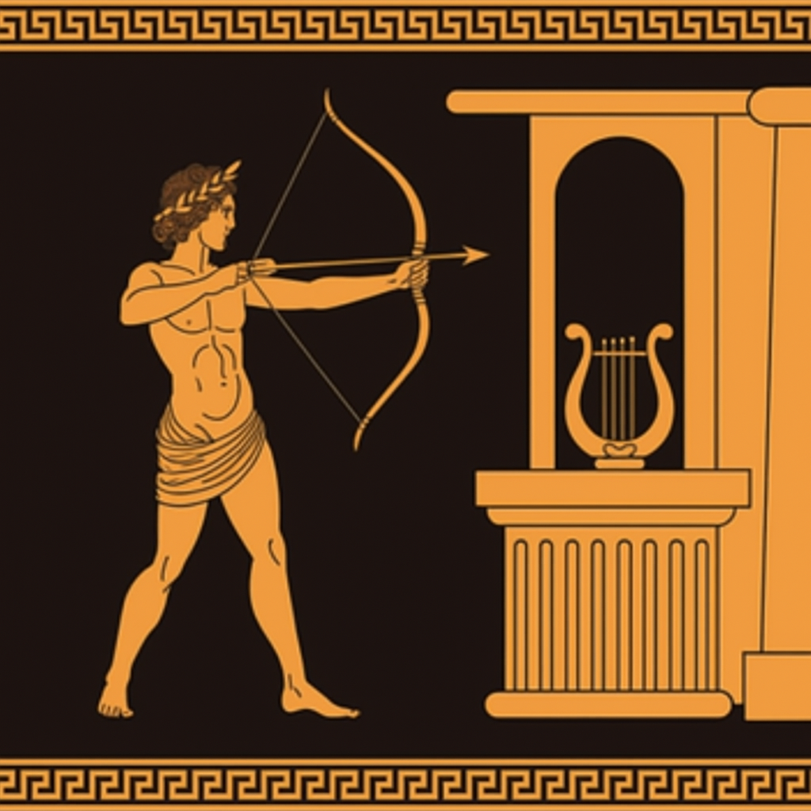

¡Bienvenido/a al módulo de Organízate sin enredarte!
La desorganización no siempre es pereza, a veces es falta de conocimiento y herramientas.
Existen diversas técnicas que se enfocan en ayudarnos con la organización, seguro conoces algunas de las más comunes, como hacer una lista o la técnica Pomodoro. ¡Aquí te enseñamos algunas más!

Tips de organización
- Planifica tu día
- Mantén una agenda y cumple con ella
- Aparta tiempo para ti y tus hobbies
- Evita distraerte en redes o el celular
Reto
Te proponemos utilizar durante una semana las técnicas ubicadas más abajo, ya sea en estudio, trabajo o cualquier actividad que tengas en tu día. Prueba cada una para encontrar aquellas que más resuenen contigo.